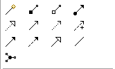
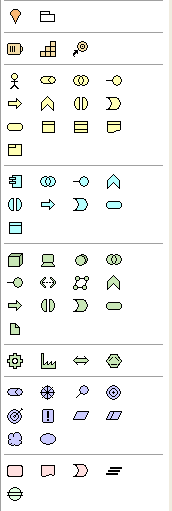

Palette Creation Tools
Apart from the Selection Tools there are other tools available on the Palette used to create new ArchiMate concepts, Notes, Groups and Relations between concepts (connections). To add a new element to the canvas select one and drag it onto or click onto the canvas.
Relations
There are several types of ArchiMate relation and a Junction element.

The Relations Creation Tools in the Palette
The first tool is the Magic Connector, used for drawing connections. This is followed by creation tools for ArchiMate relations and a Junction element.
Notes and Groups
Used for adding a Note, Group Container, or a Note Connection to a View.

Note, Group and Note Connection Creation Tools
ArchiMate Elements
These are divided into areas corresponding to the "Other", Business", "Application", "Technology", "Physical", "Motivation", and "Implementation & Migration" ArchiMate concept groupings:

The ArchiMate Element Creation tools
Note that a sub-set of these elements will only be available if the current View is restricted to a given Viewpoint.
 Tip: Press the shift key when selecting a palette tool or double-click to keep it selected.
Tip: Press the shift key when selecting a palette tool or double-click to keep it selected.
By default, once an element or connection has been drawn on the canvas the default selection tool (arrow) is re-selected on the palette. If you wish to keep the current palette tool selected hold the "Shift" key down when you select it or double-click on it. A single click will clear this option.